最全Pycharm教程（4）——有关Python解释器的相关配置
最全Pycharm教程（6）——将Pycharm作为Vim编辑器使用
最全Pycharm教程（8）——Django工程的创建和管理
最全Pycharm教程（9）——创建并运行一个基本的Python测试程序
最全Pycharm教程（11）——Pycharm调试器之断点篇
最全Pycharm教程（12）——Pycharm调试器之Java脚本调试
1、主题
这篇教程将逐步介绍如何通过Pycharm将你的代码部署在远程服务器上。
2、准备工作
（1）Pycharm版本为3.0或者更高
（2）拥有待部署远程服务器的访问权限
强调这篇教程是针对win7操作系统，使用了默认的快捷键配置方案，不同系统下的默认快捷键配置方案可能不同。
3、准备实例
建议使用 Getting Started篇所介绍的实例，那里面已经将主要步骤描述清楚，直接借用即可。
4、配置一个部署服务器
单击主工具栏中的设置按钮来打开Settings/Preferences对话框，选择 Deployment页面（也可以通过主菜单上的Tools→Deployment→Configuration命令来完成）。
单击绿色加号，在Add Server对话框中，输入服务器的名称（MyRemoteServer）并指定其类型（此处选择Local or mounted folder）：
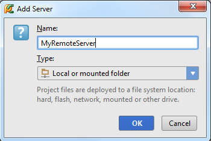
此时已经添加了一个新的服务器，但其内容为空。它只显示了Web服务的根域名（http://localhost），你需要在其中上传你的文件。
5、如何定值连接表单
选择带上传文件所在目录，这里为本地目录C:\xampp\htdocs（既可以手动输入，也可以通过Shift+Enter快捷键来打开Select Path对话框进行输入），详见 product documentation：
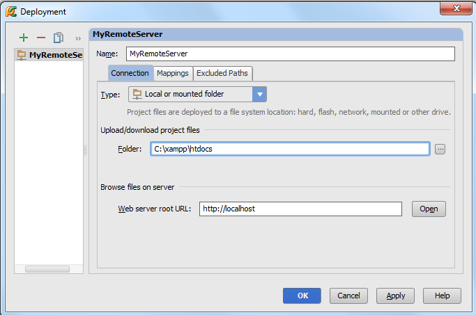
6、如何定制映射表单
接下来，选择Mappings tab，其中的Local path栏默认包含了工程根目录。当然你可以选择你的工程树中的任意目录，这里我们使用它的缺省值。
在Deployment path栏中（缺省值为空），需要定义服务器所在文件夹，将来Pycharm会从Local path文件夹向其中上传文件。这里选择为C:\xampp\htdocs。
最后在 Web path on the server MyRemoteServer栏中使用其缺省值：
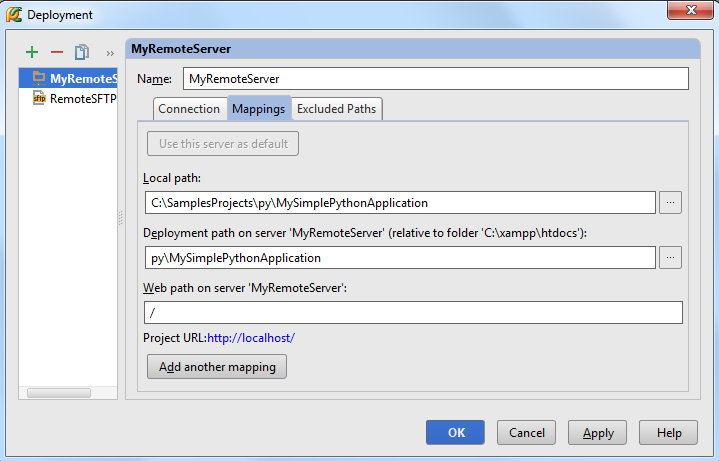
OK，保存设置，服务可用。
7、浏览远端主机
你需要简单的确认一下你的服务器是否已上线并正常运行。打开Remote Hosts tool window（位于PyCharm窗口的右边缘）：
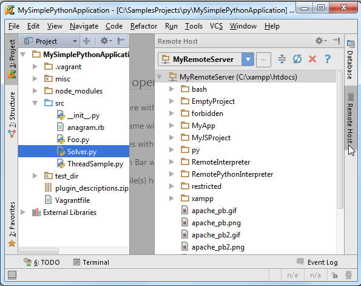
当然，也可以通过Tools→Deployment→Browse Remote Hosts菜单命令来打开这个窗口。
8、部署工具
接下来开始执行部署操作。
9、上传
首先，向远端服务器上传文件，做法如下：
在 Project tool window窗口中，右击待上传的文件，这里为Solver.py。在弹出的快捷菜单中，选择Deployment→Upload to MyRemoteServer，观察上载结果：
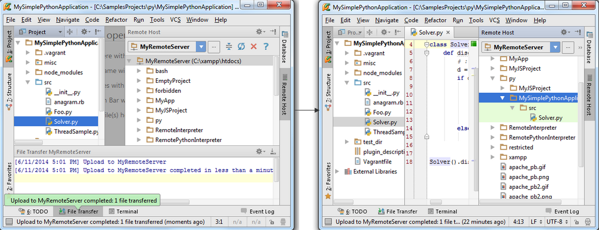
当然我们也可以上传工程目录下的所有文件。例如，右击Solver.py文件所在父目录（src），在快捷菜单中选择Upload to MyRemoteServer，就能够将目录下的所有文件上传到服务端：
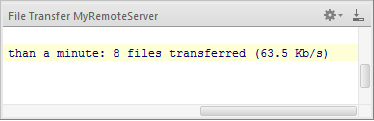
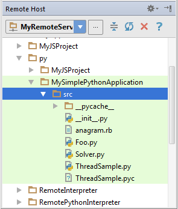
10、远程、本地版本比较
此时再远程服务端和本地服务端都有一份Solver.py文件，它们是完全相同的。此时切换到本地视图。
做法很简单，将光标定位在函数声明语句上，按下Ctrl+Alt+Shift+T（或者主菜单上的Refactor→Refactor This命令）：
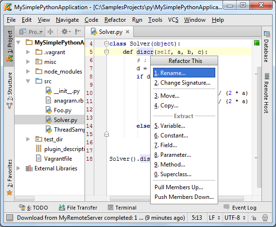
如你所见，快捷菜单中列出了当前文本下可用的所有代码重构，我们这里选择Rename refactoring，并且rename a method：
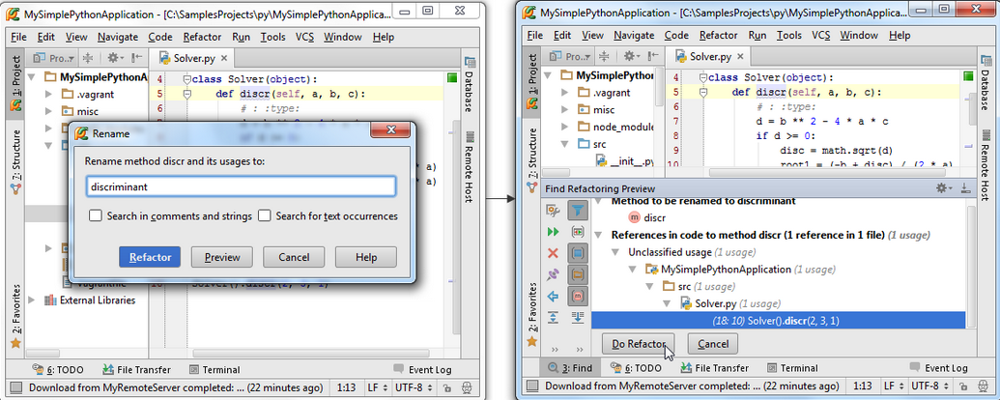
单击Do Refactor，观察函数名称以及用法的改变。
此时我们已经对一个本地版本进行了更改，接下来我们需要做的就是让Pycharm接收到这些更改。再次进入Project tool window，右击Solver.py文件，在快捷菜单中选择Deployment→Compare with Deployed Version on MyRemoteServer。Pycharm会打开differences viewer for files对话框，在这里你可以通过shevron按钮来核对所做的改变：
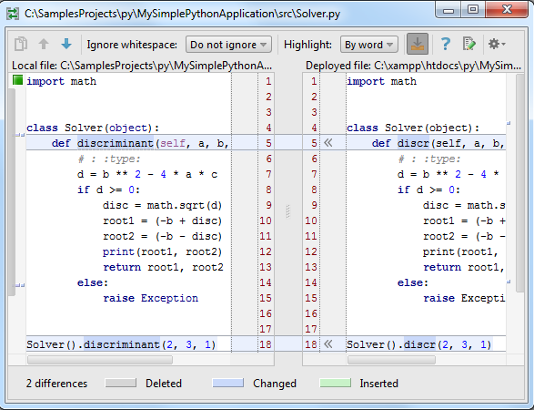
更多信息参见product documentation。
11、下载
右击Solver.py，选择Deployment→Download from MyRemoteServer，Pycharm会立即给出警告提示：
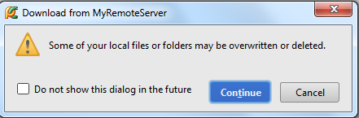
不必惊慌，直接单击Continue即可：
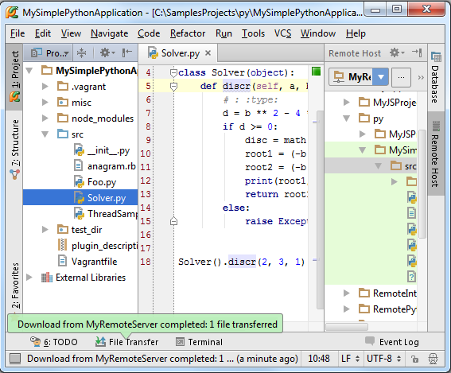
对应的你也可以下载整个目录下的文件，前提是这些文件已经上传完成。例如，右击父目录src，执行相同操作，即会自动下载目录中所有嵌套文件。
然而如果你试图下载一个还未上传的文件，Pycharm会给出下载失败的提示：
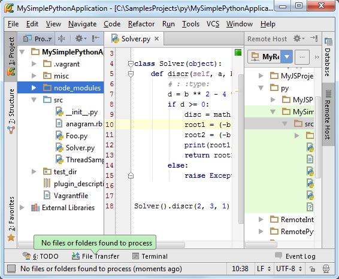
12、同步机制调整
首先需要进行一步准备工作，就是将对Solver.py文件所做的更改撤销（Ctrl+Z），此时会再次看到Solver.py文件中类的成员函数重构名称。
接下来右击Solver.py，选择Deployment→Sync with Deployed to MyRemoteServer，Pycharm弹出 differences viewer for folders窗口，在这里你可以通过shevron按钮来核对所做的单独改变：
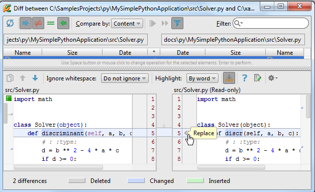
当然也可以对整个文件夹进行同步操作。例如右击node_modules选择Deployment→Sync with Deployed to MyRemoteServer，此时会在左窗口中显示node_modules文件夹中的内容，但右侧窗口为空，因为该目录下的文件并未上传到服务端。我们可以在此处进行上传。选择待同步的文件，单击工具栏上的按钮：
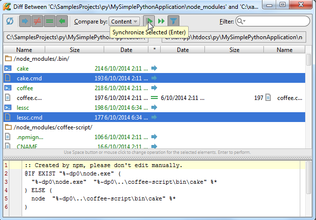
13、自动上传至缺省服务器
当用户需要在服务端使用与Pycharm工程中完全相同的文件时，自动上传功能就显得很用帮助。自动上传功能意味着无论在IDE中对代码进行了何种改变，Pycharm都会自动将其保存在已部署的默认的服务端。
14、将服务器指定为缺省服务器
缺省服务器的最大优点就是可以使用自动上传功能，指定方法如下：
（1）在Deployment page页面上选择一个服务器。有两种打开Deployment page页面的方法：要么使用Settings/Preferences→Deployment菜单命令，要么使用Tools→Deployment→Configuration菜单命令。
（2）在server configurations列表中，单击缺省按钮：
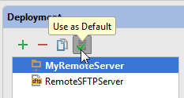
15、启用自动上传功能
设置完缺省服务器之后，接下来就是开启自动上传功能。做法如下：
首先，打开Options部署选项（主菜单中的Settings/Preferences→Deployment→Options 或者 Tools→Deployment→Options命令），在Upload files automatically to the defaylt server选项中选择Always，或者On explicit save action选项：
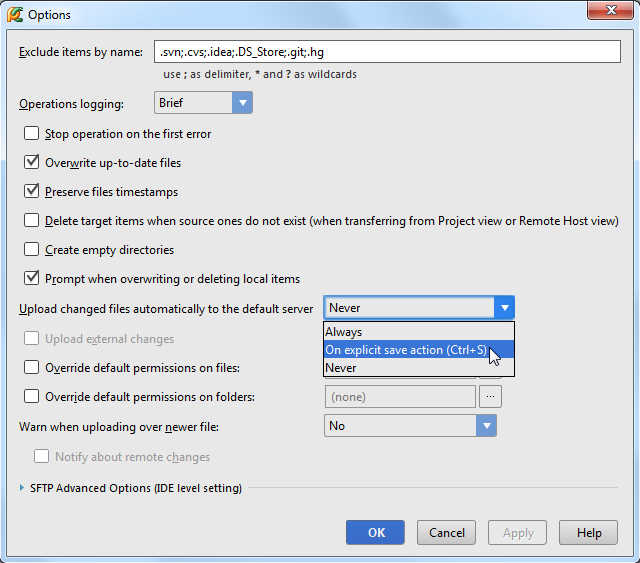
以上两个选项之间的差别详见 in the field description。
第二步，勾选主菜单Tools→Deployment→Automatic upload复选框，注意此时的automatic apload选项已经处于Always的模式：
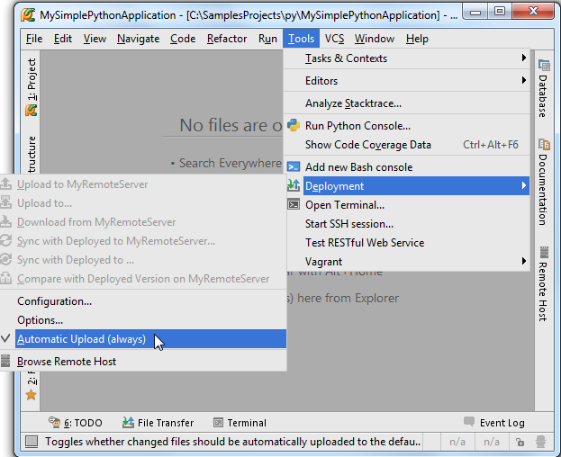
值得一提的是，我们并不推荐在发布的产品中使用Always模式，避免我们在部署过程中不经意上传了未开发完整的代码，从而破坏了产品的稳定性。
16、上传外部更改
默认情况下Pycharm只上传文件自身的更改情况，如果我们通过其他途径对文件进行了更改，例如通过VCS branch、transpilation of SASS 或者 LESS or a File Watcher进行的更改，Pycharm是不会将这些更改自动上传的，为了保证这些更改也能顺利上传，需要启用Upload external changes功能：
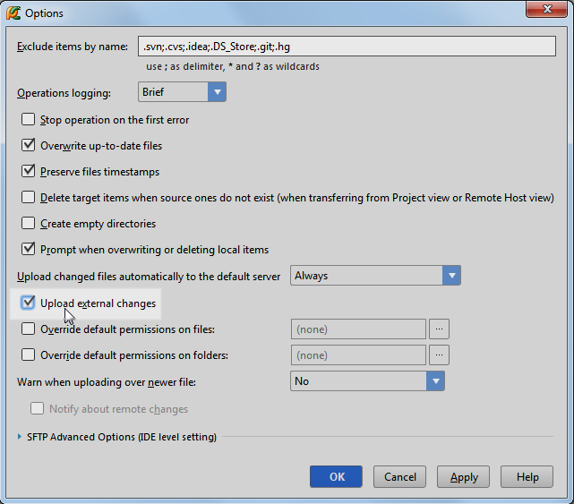